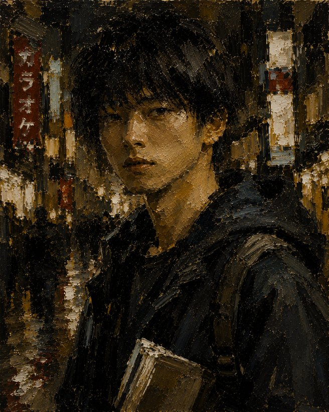

This story contains mature themes, including violence, possession, grief, psychological horror and adult relationships.
VEIL PROTOCOL
An interactive novel. The Other Side.
Tokyo, August. Obon week. Your brother Gin went quiet on a Wednesday night. His key was on the walkway. You are Uedera Rei, nineteen, and you have spent your whole life being ordinary on purpose.
Find him. Decide what "found" means.
SELECT SAVE SLOT
Veil Protocol
STBMAD
· · ·
UEDERA REI

Uedera Rei
Nineteen. Criminal investigation intern. Registered rank D, and that is the lie you have kept all your life. Gin's younger brother.
Status
Paths
Carrying
PEOPLE
Everyone you know in this, and where you stand with them. The line runs from enemy on the left to the closest bond on the right.